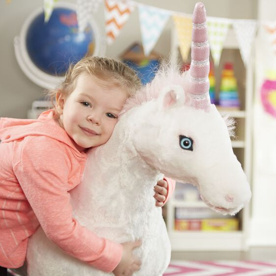

Available
Unicorn - Plush
Baby and Toddler
Contact for priceShimmering details give this unicorn an enchanted look Sturdy wireframe helps the unicorn stand tall on four durable hooves Soft, cuddly fabric is surface washable Unicorn is 45 inches long x 32 inches high x 12 inches wide For ages 3+ Not intended to hold the weight of a child Product: 32
Enquire about this product

Unicorn - Plush at Kids Corner KZN
Unicorn - Plush is part of our Baby and Toddler collection. Kids Corner KZN stocks toys for learning, pretend play, creative play, gifting and everyday childhood discovery in South Africa.
Browse more Baby and Toddler toys